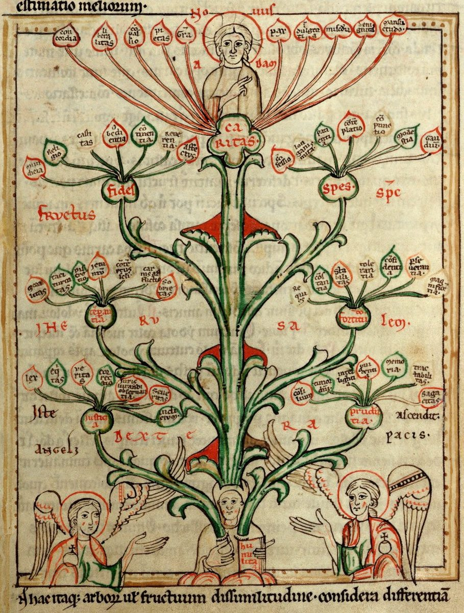

Galatians 5 — The Mister Translation

⚠ A medieval diagram of the virtues as a tree, its leaves marked as fruits. The labels are Latin, and among the leaves are words of the Vulgate’s twelve-name list in verses 22–23, such as pax, gaudium, longanimitas, continentia and castitas: peace, joy, longanimity, continency and chastity. The facing page of the same book draws the tree of vices.

Translator’s Notes
“For freedom Christ set us free” — and where the verse begins. Tē eleutheria hēmas Christos ēleutherōsen: the noun and its verb side by side, freedom and set free, and this translation keeps the pair. The Byzantine text joins the words differently, “stand fast, then, in the freedom with which Christ set us free,” which is why the KJV reads “Stand fast therefore in the liberty wherewith Christ hath made us free”; the Vulgate gives the first clause to 4:31 and starts this verse at “stand,” so the Douay reads only “Stand fast, and be not held again under the yoke of bondage.” The zygos, “yoke” (dictionary), is the word Peter used of the law at the council in Jerusalem, “a yoke on the neck of the disciples that neither our fathers nor we have been able to bear” (Acts 15:10). The ASV reads “For freedom did Christ set us free”; the NWT 1984 reads “For such freedom Christ set us free.”
“If you have yourselves circumcised … a debtor to do the whole law.” Peritemnēsthe and peritemnomenō are present tense, middle or passive: men who are having it done, or letting it be done to them, now. Paul’s point in v3 is that circumcision is not one rule taken on by itself but the entry into the whole law. The NIV reads “if you let yourselves be circumcised”; the ASV reads “if ye receive circumcision”; the NWT 1984 reads “he is under obligation to perform the whole Law.”
⚠ “Released from Christ … fallen away from grace.” The verb is katargeō, to put out of action (dictionary), the verb of Romans 7:6, “we have been released from the law,” and of the wife “released from the law of the husband” at Romans 7:2. Here the release runs the other way: from Christ. “You who would be justified” is a present tense that reads as an attempt, as in the ASV, “Ye are severed from Christ, ye would be justified by the law.” Ekpiptō is to fall out of or away from, and the English idiom “fallen from grace” is usually traced to this verse in the older English Bibles: the KJV reads “ye are fallen from grace.” What the verse implies about whether grace, once received, can be lost has long been argued between traditions; the verse is addressed to people seeking to be justified by law, and this page does not settle the dispute. The NWT 1984 reads “YOU are parted from Christ”; the Douay reads “You are made void of Christ.”
“Eagerly awaiting the hope of righteousness.” Apekdechomai is the verb of Romans 8:23, “waiting for adoption.” “The hope of righteousness” can be the hope that righteousness brings, or righteousness itself as the thing hoped for; the NIV reads “the righteousness for which we hope” and the NWT 1984 “the hoped-for righteousness,” while the KJV keeps the ambiguity, “wait for the hope of righteousness by faith.”
⚠ “Faith working through love.” Energoumenē can be middle, faith at work through love, or passive, faith made effective by love. The phrase has carried weight in the old debate between Catholic and Protestant theology over how faith and love are related, and the two readings of the participle have been enlisted on either side; this page sets out both. The first half repeats 1 Corinthians 7:19, “Circumcision is nothing, and uncircumcision is nothing.” The KJV reads “faith which worketh by love”; the Douay reads “faith that worketh by charity”; the NIV reads “faith expressing itself through love.”
“You were running well. Who cut in on you?” Running is Paul’s picture for the life of faith: “running, or had run, in vain” at 2:2, the runners in the stadium at 1 Corinthians 9:24. Enkoptō, to hinder, literally to cut into, stands in five verses of the New Testament: Acts 24:4, “so that I may not detain you,” Romans 15:22, “I was often hindered,” this one, and 1 Thessalonians 2:18 and 1 Peter 3:7. This translation prints “cut in on” here because the verse is a race (dictionary). The KJV reads “who did hinder you”; the Geneva reads “who did let you,” with the old English “let” that meant to hinder; the NIV reads “Who cut in on you.”
“This persuasion is not from the one who calls you.” Peismonē stands in one verse of the New Testament, this one. It shares its root with peithesthai, “obey,” in v7 and pepoitha, “I am confident,” in v10: they were persuaded away from obeying, and Paul is persuaded about them. “The one who calls you” is God, as at 1:6. The KJV reads “This persuasion cometh not of him that calleth you”; the TLB reads “It certainly isn’t God who has done it.”
“A little leaven leavens the whole lump.” The proverb stands word for word in two verses of the New Testament: here, and 1 Corinthians 5:6, where it is the boasting congregation’s tolerated sin. Leaven is usually the bad thing that spreads, as in “beware of the leaven of the Pharisees” (Matthew 16:6), though at Matthew 13:33 the kingdom itself is leaven (dictionary). The KJV reads “A little leaven leaveneth the whole lump”; the Douay reads “A little leaven corrupteth the whole lump,” from the Vulgate’s corrumpit; the NIV reads “A little yeast works through the whole batch of dough.”
“The one who is troubling you … whoever he may be.” Tarassō is the “troubling you” of 1:7. Here it is singular and unnamed, and “whoever he may be” leaves it so: a ringleader, or any one of them. The KJV reads “he that troubleth you shall bear his judgment, whosoever he be”; the NIV reads “will have to pay the penalty.”
⚠ “If I am still preaching circumcision” — and the stumbling-block of the cross. Someone was apparently saying that Paul himself still preached circumcision; the verse does not say what the charge rested on, though Acts tells of Paul circumcising Timothy “because of the Jews who were in those places” (Acts 16:3). His answer is the persecution he still suffers. Skandalon is the “stumbling-block” of 1 Corinthians 1:23, “Christ crucified — to Jews a stumbling-block” (dictionary), and “done away with” is katargeō again, the “released” of v4. The KJV reads “then is the offence of the cross ceased”; the ASV reads “then hath the stumbling-block of the cross been done away”; the NWT 1984 reads “the stumbling block of the torture stake,” its rendering of stauros, which reflects the Witnesses’ teaching that Jesus died on a single upright stake.
⚠ “Would even castrate themselves.” Apokoptō, to cut off, stands in six verses of the New Testament: the hand and foot cut off at Mark 9:43 and 9:45, Malchus’s ear at John 18:10 and 18:26, the ropes of the ship’s boat at Acts 27:32, and this one, the only verse where it is middle voice, “cut themselves” (dictionary). The Greek Old Testament uses its participle at Deuteronomy 23:1 (23:2 in the Hebrew and Greek numbering) of the castrated man barred from “the assembly of the Lord.” Commentators also point out that Pessinus in Galatia was a centre of the cult of Cybele, whose priests castrated themselves. The KJV and the Douay read “I would they were even cut off,” which can be heard as being cut off from the congregation; the ASV reads “would even go beyond circumcision”; the NWT 1984 reads “would even get themselves emasculated”; the NIV reads “go the whole way and emasculate themselves.” “Turning you upside down” is anastatoō, which stands in three verses: the crowd’s charge at Thessalonica, “these men who have turned the inhabited world upside down” (Acts 17:6), the Egyptian who “stirred up a revolt” (Acts 21:38), and this one.
“Called to freedom … be slaves to one another.” The chapter that began by refusing “a yoke of slavery” turns here to douleuete, “be slaves,” to one another through love, and this translation keeps the hard word. Aphormē, “opportunity,” is a base to launch from, the word of Romans 7:8, “sin, taking an opportunity through the commandment” (dictionary). The Vulgate adds “of the Spirit,” and so the Douay: “by charity of the spirit serve one another.” The KJV reads “use not liberty for an occasion to the flesh”; the NWT 1984 reads “an inducement for the flesh … through love slave for one another.”
“The whole law has been fulfilled in one word.” The word is Leviticus 19:18, “you shall love your neighbor as yourself: I am Jehovah.” Paul quotes the line as the Greek Old Testament has it, which matches the Hebrew, and leaves off “I am Jehovah.” He uses it the same way at Romans 13:9, where every commandment is “summed up in this word,” and Romans 13:8, “the one who loves the other has fulfilled the law”; in the Gospels it is the second commandment (Mark 12:31, Matthew 22:39). “Has been fulfilled” is perfect tense in the critical text; the Byzantine has the present, and so the KJV reads “For all the law is fulfilled in one word.” The NWT 1984 reads “the entire Law stands fulfilled in one saying”; the NIV reads “fulfilled in keeping this one command.”
“If you bite and devour one another.” Daknō, “bite,” stands in one verse of the New Testament, this one: animals fighting until there is nothing left of either. The KJV reads “take heed that ye be not consumed one of another”; the NWT 1984 reads “look out that YOU do not get annihilated by one another”; the TLB reads “always critical and catty.”
⚠ “Walk by the Spirit, and you will not carry out the desire of the flesh.” “Walk” is peripateō, the ordinary word for a way of life. The second half is ou mē with the aorist subjunctive, the strongest form of “not” Greek has, and most of the shelf reads it as a promise rather than a second command: the KJV reads “ye shall not fulfil the lust of the flesh”; the NIV reads “you will not gratify the desires of the flesh.” Greek manuscripts of the period have no capital letters, so “Spirit” or “spirit” is the translator’s choice; this translation prints “Spirit” where God’s Spirit is meant, as at 4:6. The NWT 1984 prints “Keep walking by spirit,” lower case through the chapter, in line with the Witnesses’ view of the holy spirit as God’s active force.
⚠ “So that you do not do the things you want.” Three readings are argued: the Spirit stops you doing what the flesh wants; the flesh stops you doing what the Spirit wants; or the two are so opposed that neither desire simply has its way. The struggle recalls Romans 7:15, “I do not practice what I wish, but what I hate, this I do,” and this page does not choose among the readings. “Led by the Spirit” is the phrase of Romans 8:14, “as many as are led by God’s Spirit, these are God’s sons.” The KJV reads “so that ye cannot do the things that ye would”; the NIV reads “so that you are not to do whatever you want”; the NWT 1984 reads “the very things that YOU would like to do YOU do not do.”
⚠ “The works of the flesh are plain.” “The works of the flesh” stands in one verse of the New Testament, this one, plural, where v22 will have one “fruit.” The list opens with the three words of 2 Corinthians 12:21, “the impurity and sexual immorality and sensuality,” in another order (porneia, aselgeia). The Byzantine text puts moicheia, “adultery,” at its head, and so the KJV reads “Adultery, fornication, uncleanness, lasciviousness”; the Vulgate has four words where the Greek has three, and the Douay reads “fornication, uncleanness, immodesty, luxury.” The NWT 1984 reads “fornication, uncleanness, loose conduct.”
⚠ “Sorcery” — pharmakeia. Pharmakeia stands in two verses of the New Testament: this one, and Revelation 18:23, where Babylon deceived the nations by it. It comes from pharmakon, a drug, a potion or a poison, the source of English “pharmacy.” That history is sometimes pressed to make the verse about drug use, or about medicine; set next to idolatry, the word names magic, the potions and spells of the ancient cults, and the shelf takes it so (dictionary). The KJV and the NIV read “witchcraft”; the ASV reads “sorcery”; the NWT 1984 reads “practice of spiritism.”
“Strife, jealousy, fits of anger, self-seeking.” Eight of the fifteen words in the critical text’s list are about quarrels in a congregation, and four of them stand in the same order at 2 Corinthians 12:20, “strife, jealousy, fits of anger, self-seeking.” “Hostilities” is the noun of Romans 8:7, “the mind of the flesh is hostility toward God.” Dichostasia, “division,” stands in two verses, Romans 16:17 and this one; hairesis, “faction,” is the word of 1 Corinthians 11:19, “there must also be factions among you,” and English “heresy” descends from it (dictionary). The KJV reads “hatred, variance, emulations, wrath, strife, seditions, heresies”; the NIV reads “hatred, discord, jealousy, fits of rage, selfish ambition, dissensions, factions.”
“Envy, drunkenness, revels.” The Byzantine text, and Tregelles with it, adds phonoi, “murders,” after phthonoi, “envyings”: the two words differ by one letter. So the KJV reads “Envyings, murders, drunkenness, revellings”; the ASV reads “envyings, drunkenness, revellings.” Kōmos, a drinking party that spills into the street, stands in three verses, and one of the others puts it beside drunkenness too: “not in revels and drunkenness” (Romans 13:13).
“Will not inherit the kingdom of God.” “As I told you before” points back to Paul’s time with them. Prassontes is a present participle, those who practice these things as a way of life. The same warning, with another list, stands at 1 Corinthians 6:9 and 6:10. The KJV reads “they which do such things shall not inherit the kingdom of God”; the NWT 1984 reads “those who practice such things will not inherit God’s kingdom”; the Douay reads “shall not obtain the kingdom of God.”
⚠ “The fruit of the Spirit” — one fruit, nine names, or twelve. “The fruit of the Spirit” stands in one verse of the New Testament, this one. Karpos is singular after the plural “works”: one crop, not a set of achievements (dictionary). The Greek names nine. The Vulgate names twelve, and so the Douay: “charity, joy, peace, patience, benignity, goodness, longanimity,” and in the next verse “Mildness, faith, modesty, continency, chastity”; Catholic teaching, following the Latin, speaks of twelve fruits of the Spirit. The NWT 1984 reads “the fruitage of the spirit.”
“Love, joy, peace, patience, kindness, goodness.” Makrothymia, “patience,” is long-temperedness, and chrēstotēs, “kindness,” is goodness in action (dictionary, dictionary); their verbs open the love chapter, “Love waits long; love shows kindness” (1 Corinthians 13:4). Agathōsynē, “goodness,” stands in four verses, all in Paul: Romans 15:14, “full of goodness,” this one, Ephesians 5:9 and 2 Thessalonians 1:11, “every good resolve of goodness” (dictionary). The KJV reads “longsuffering, gentleness, goodness”; the ASV reads “longsuffering, kindness, goodness”; the NIV reads “forbearance, kindness, goodness.”
“Faithfulness, gentleness, self-control.” The first word is pistis, the “faith” of the whole letter (2:16, 3:2, and v5 and v6 of this chapter). In a list of qualities of character this translation prints “faithfulness,” as the ASV and the NIV do; the KJV and the NWT 1984 print “faith.” Praütēs is the “gentleness” of 1 Corinthians 4:21, “in love and a spirit of gentleness,” and the “meekness” of 2 Corinthians 10:1; enkrateia is the “self-control” Paul reasoned about before Felix (Acts 24:25) (dictionary). “Against such things there is no law”: no law forbids them, and none is needed to produce them. The KJV reads “Meekness, temperance: against such there is no law”; the NWT 1984 reads “mildness, self-control.”
“Have crucified the flesh.” At 2:19 Paul says, “I have been crucified with Christ,” a passive; here the believers are the ones who did it, active and past. Pathēmata are the “passions” of Romans 7:5, “the passions of sins.” The critical text reads “Christ Jesus,” the Byzantine “Christ,” and so the KJV reads “they that are Christ’s have crucified the flesh with the affections and lusts”; the Douay reads “with the vices and concupiscences”; the NWT 1984 reads “impaled the flesh,” its rendering of stauroō.
⚠ “Walk in line with the Spirit” — stoicheō. Stoicheō, to walk in a row, to keep in step, stands in five verses of the New Testament: Acts 21:24, where Paul is to show that he “walks in line, keeping the law”; Romans 4:12, “those who walk in the footsteps” of Abraham’s faith; this one; and Galatians 6:16 and Philippians 3:16 (dictionary). It is the root of the stoicheia, “elements,” of 4:3 and 4:9: the readers who were enslaved under the elements are now to keep in line with the Spirit. The KJV reads “let us also walk in the Spirit”; the NIV reads “let us keep in step with the Spirit”; the NWT 1984 reads “let us go on walking orderly also by spirit.”
“Hungry for empty glory.” Kenodoxos, kenos, “empty,” and doxa, “glory,” stands in one verse of the New Testament, this one; its noun is at Philippians 2:3. The KJV reads “Let us not be desirous of vain glory”; the NWT 1984 reads “Let us not become egotistical”; the NIV reads “Let us not become conceited.”
Patterns worth carrying forward
Where this translation keeps the exact words: “freedom” and “set free” together at 5:1; “yoke,” as at Acts 15:10; “released” for katargeō at 5:4, as at Romans 7:6, and “done away with” for the same verb at 5:11; “stumbling-block,” as at 1 Corinthians 1:23; “A little leaven leavens the whole lump,” as at 1 Corinthians 5:6; “turning you upside down,” as at Acts 17:6; “opportunity” for aphormē, as at Romans 7:8; “be slaves” for douleuō; “You shall love your neighbor as yourself,” as at Romans 13:9; “impurity,” “sexual immorality” and “sensuality,” as at 2 Corinthians 12:21; “strife, jealousy, fits of anger, self-seeking,” as at 2 Corinthians 12:20; “gentleness,” as at 1 Corinthians 4:21; and “walk in line” for stoicheō, as at Acts 21:24.
Echoes paid. The slavery of 4:24–31 and the free woman become the freedom of 5:1; the yoke of Acts 15:10; released from Romans 7:6; running from 2:2; the one who calls you and those troubling you from 1:6–7; the leaven of 1 Corinthians 5:6; the persecution “now” promised at 4:29; Timothy’s circumcision at Acts 16:3; the neighbor of Leviticus 19:18 and Romans 13:9; the vices of 2 Corinthians 12:20 and 12:21; love that waits long and shows kindness from 1 Corinthians 13:4; crucified from 2:19; and the elements of 4:3, now a line to walk in.
Echoes planted. Bear one another’s burdens and the law of Christ at 6:2; sowing to the flesh and to the Spirit at 6:8; circumcision as nothing and a new creation at 6:15; and walking in line once more at 6:16.
Next in this book: Galatians 6. “Bear one another’s burdens,” sowing and reaping, large letters in Paul’s own hand, and the marks of Jesus.